Bonjour à tous,
Cette semaine , vous pouvez passer vos commandes tous les jours sauf mercredi 10, les jours "à privilégier" pour le retrait de vos commandes sont de jeudi a dimanche inclus de 10h30 à 19h
Voici,ci dessous, la liste de cette semaine
- Tomates cocktail 3.50/300g
- Poivrons (vert ou rouge) 8€/kg
- Piment de cayenne 3€/100g
- Courge musquée 3€/kg
- Courge green d hokkaido 3€/kg
- Potimaron 3€/kg
- Butternut 3€/kg
- Radis rond de raxe 2€/b
- Courgette ronde de nice 3€/kg
- Céleri à couper 1.50/b
- Oseille fraiche 2€/b
- Ciboule de chine 1.50/b
- Bouquet garni 2.50 composé de ciboule de chine , aneth, sarriette sauge officinale, ciboulette, romarin, menthe, celeri branche, verveine citron)
- Coing 3€/kg
Produits transformés- Verveine séchée 3€
- Sauge officinale 3€
- Fleurs d origan séchées 5€
- Puree de piment de cayenne (E.d.Scoville 6/10) 10€/pot 250g
Miel de printemps du champ carrillon 6€/250g ou 11€/500g
Miel d été du champ carrillon 6€/250g ou 11€/500g
Arbre à piment 12€
Verveine citron pot de 2 pieds 5€
Sauge officinale 5€
Voici ma ligne directe pour formuler vos demandes par texto 06 59 43 49 01 et pour tous compléments d'information.
Je vous souhaite une excellente semaine à tous
Caroline
ELCC


 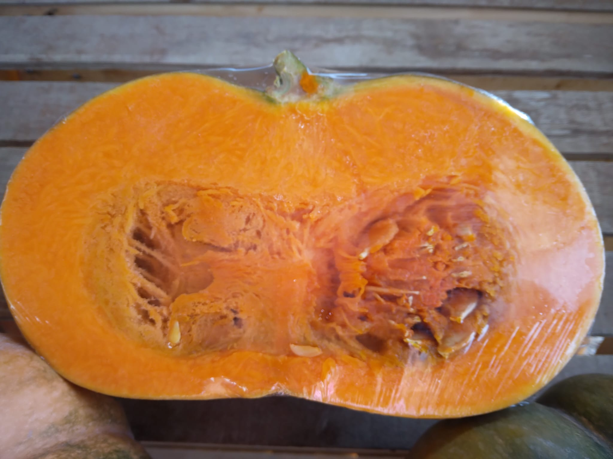
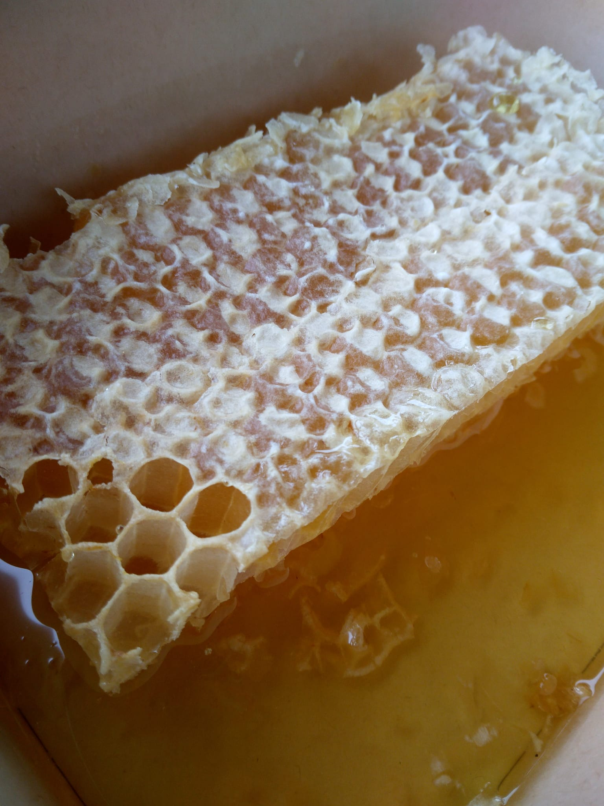
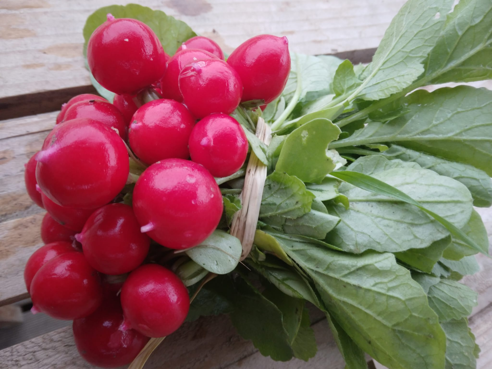
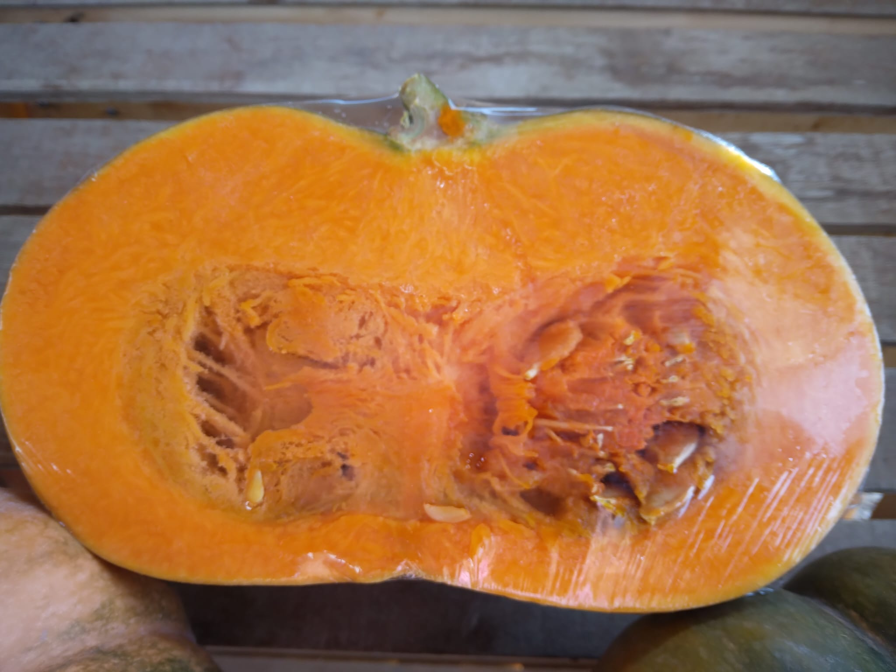
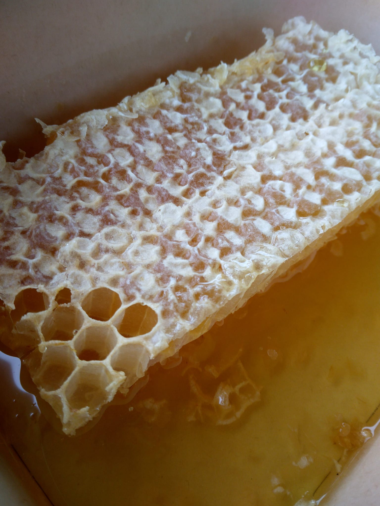
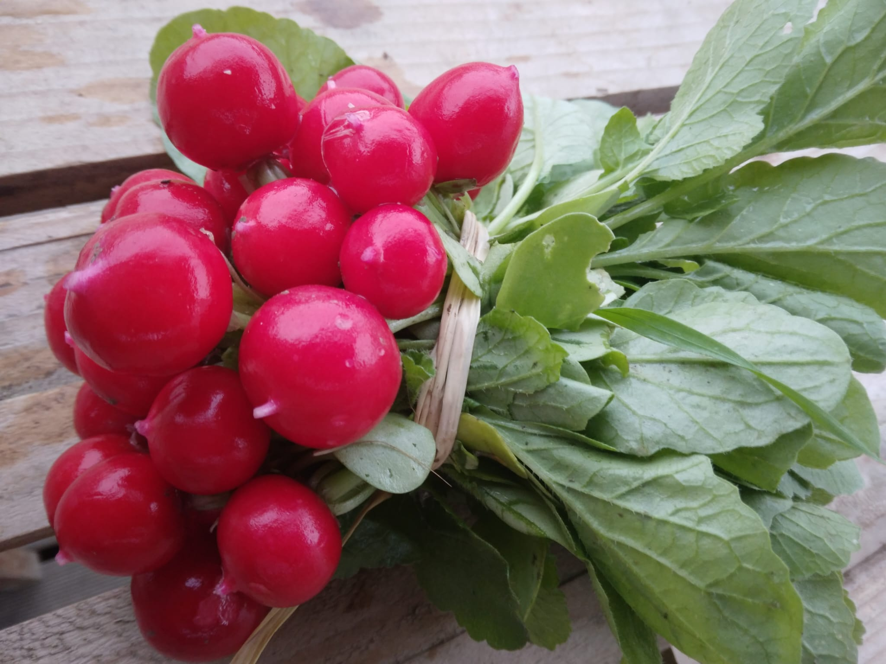

 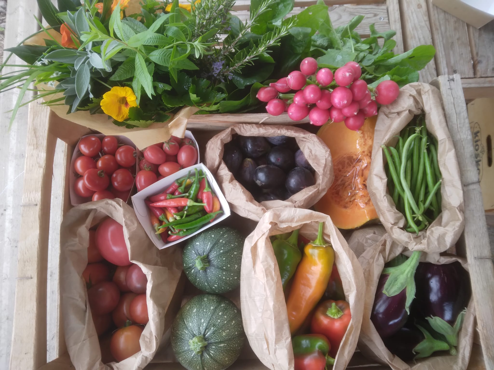
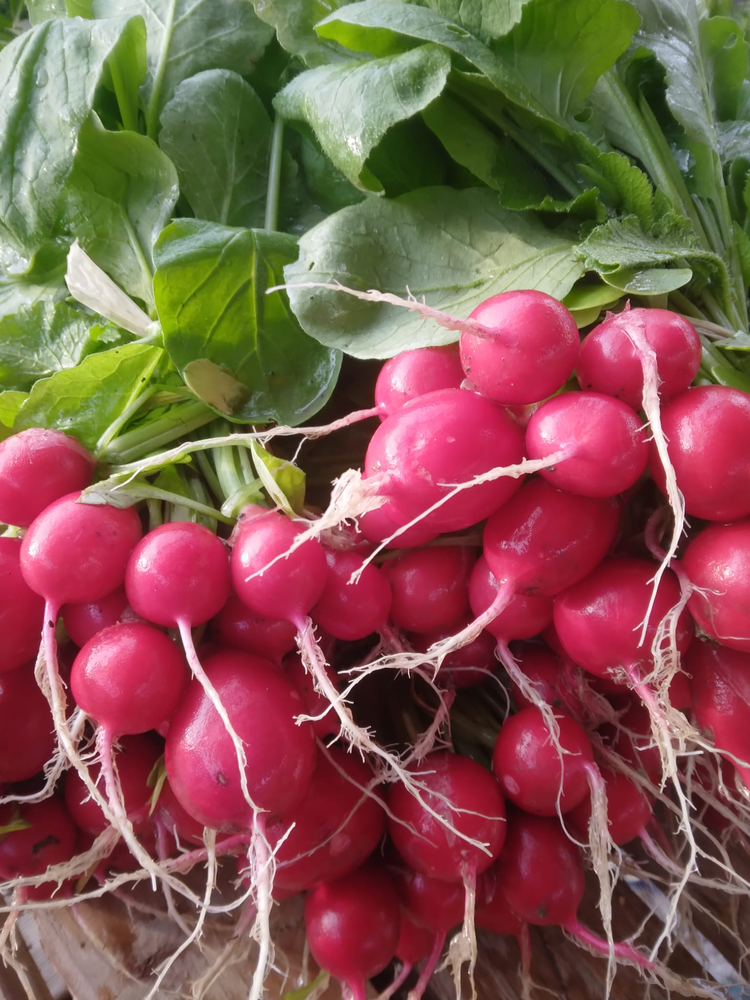
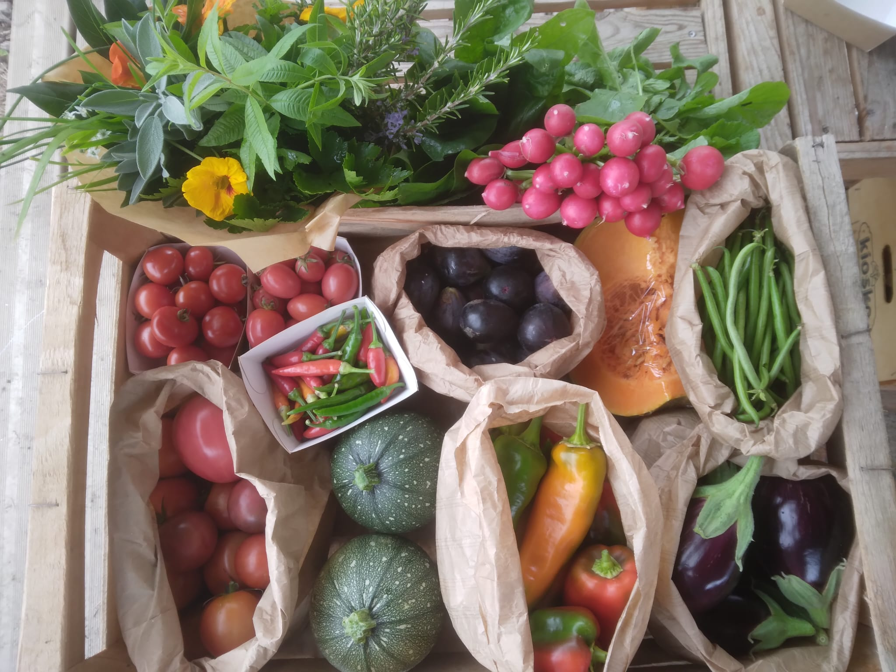
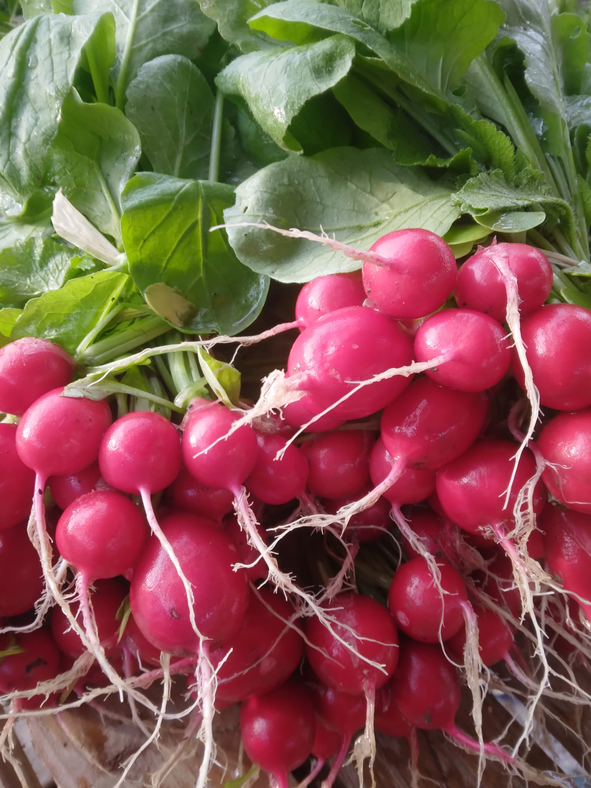
 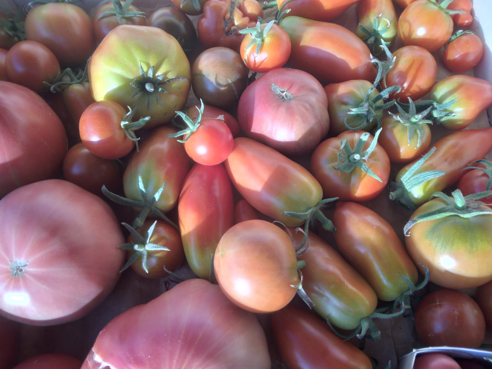
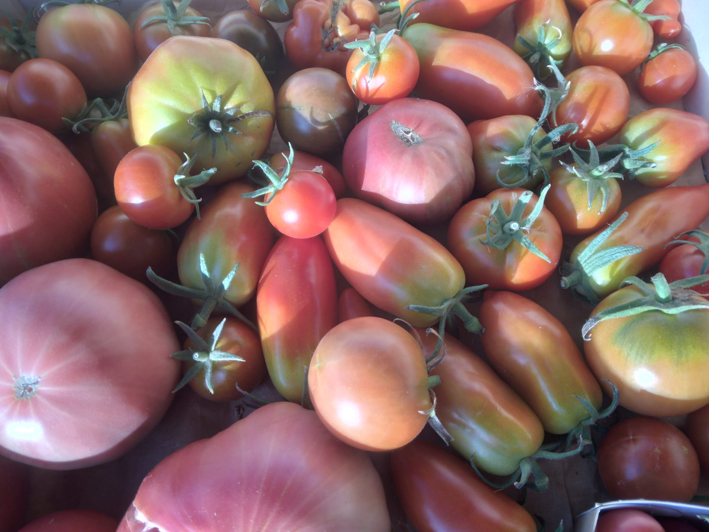